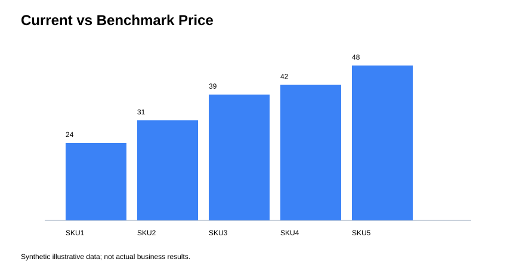
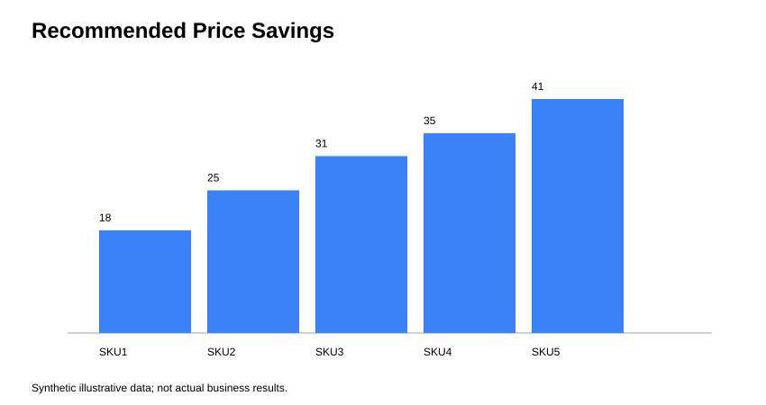

Demo data notice: The included dataset and recommendations are synthetic examples for demonstrating the workflow. They are not actual supplier quotations or realized savings.


Review the cost savings report and the CSV files in this folder for example item-level recommendations.